散布図
散布図は二つのデータの関係を把握するために利用される基本的なグラフです。散布図は相関関係の把握や単回帰分析の際によく使われます。
必要なパッケージ
本ページのコードを実行するには標準パッケージ以外に以下の追加パッケージを読み込んでおく必要があります。
| Package | Description |
|---|---|
| tidyverse | Easily Install and Load the ‘Tidyverse’ |
| car | Companion to Applied Regression |
| maptools | Tools for Reading and Handling Spatial Objects |
対象データ
標準パッケージに組み込まれている以下のデータセットを用います。
| Dataset | Package |
|---|---|
| iris | datasets |
| mtcars | datasets |
標準パッケージを用いる方法
標準パッケージを用いて箱ひげ図を描くにはplot関数を用います。plot関数は様々なグラフを描くことが可能ですがx、yオプションにデータを指定すると自動的に散布図が指定されます。明示的に散布図を指定したい場合はtypeオプションに"p"を指定してください。なお、formula形式でデータを指定することも可能です。
plot(iris$Sepal.Length, iris$Sepal.Width, type = "p")
追加パッケージを用いる方法
ggplot2パッケージ以外にも散布図を描くのに便利な関数がありますので、これらも含めて紹介します。
周辺箱ひげ図付き散布図
carパッケージのcar::scatterplot関数はR Commander で散布図を描く際に呼び出されている関数です。特徴は両軸に箱ひげ図（周辺箱ひげ図）を描がける点です。ただし、carパッケージのv3.0-0版では引数名などがv2.1-6から大きく変わっていますので注意してください。
car::scatterplot(Sepal.Width ~ Sepal.Length, data = iris)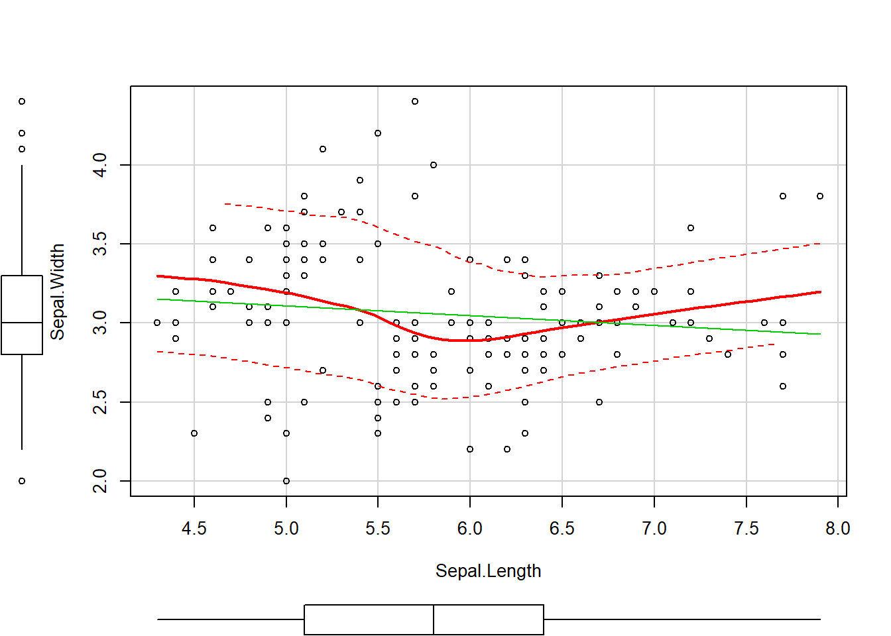
ただし、デフォルトでは上図のように回帰線なども描かれてしまいますので必要に応じてオプションで描画しないように設定してください。
散布図
ggplot2パッケージではggplot2::geom_point関数を用いることで散布図を描くことができます。
iris %>%
ggplot2::ggplot(ggplot2::aes(x = Sepal.Length, y = Sepal.Width)) +
ggplot2::geom_point()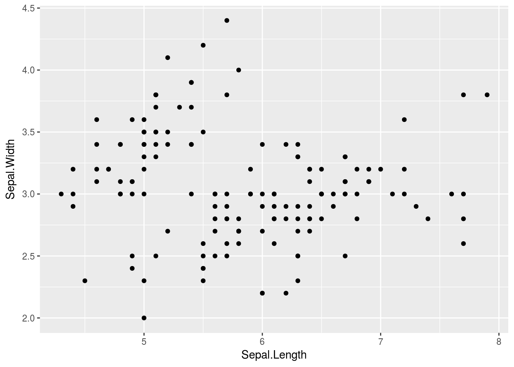
層別散布図
car::scatterplot関数は層別の散布図を描くことも可能です。ここでは分かりやすくするために回帰線などは描いていません。
car::scatterplot(Sepal.Width ~ Sepal.Length, data = iris, groups = iris$Species,
regLine = FALSE, smooth = FALSE)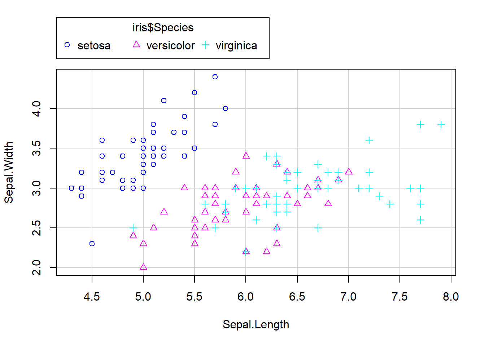
ggplot2::geom_point関数で層別表示を行うにはggplot2::aes関数を用いて色を変える場合はcolourオプションを層別でマーカの形を変える場合はshapeオプションを指定してください。
iris %>%
ggplot2::ggplot(ggplot2::aes(x = Sepal.Length, y = Sepal.Width)) +
ggplot2::geom_point(ggplot2::aes(colour = Species, shape = Species))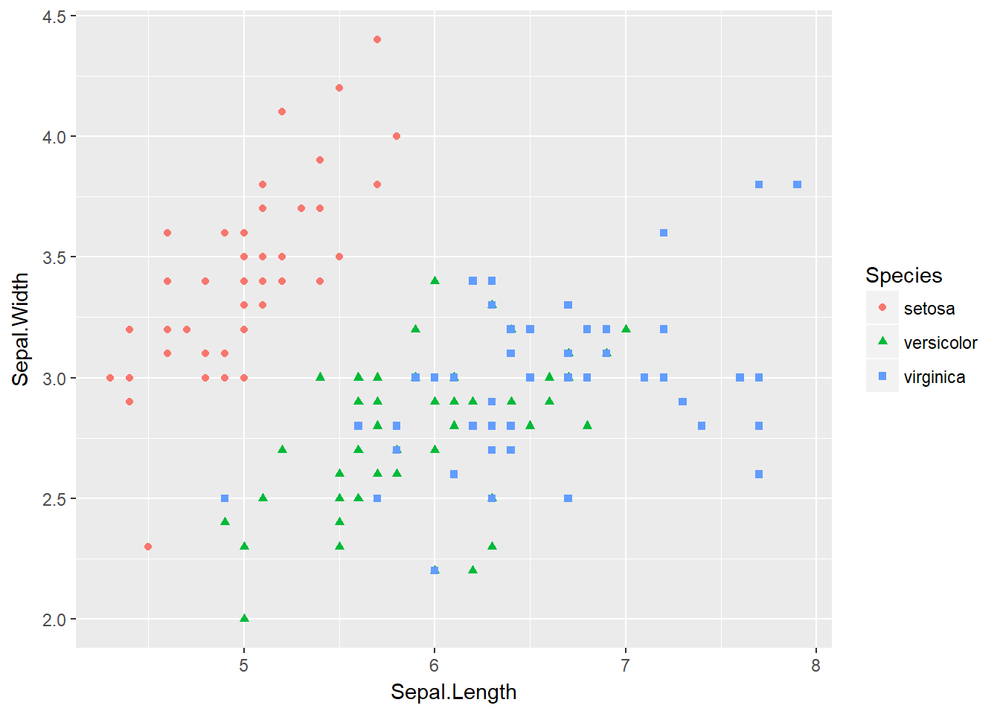
散布図と回帰線
散布図は前述のように相関関係や回帰分析の際に利用されますので回帰線も描ける必要があります。
car::scatterplot関数ではデフォルトで回帰直線を描けますが明示的に指定する場合はregLineオプションを指定してください（v2.1-6ではreg.lineオプションです）。なお、v3.0-0では散布図を層別描画するためのgroupsオプションを指定し回帰直線を層別描画させないようにby.groups = FALSEを指定すると散布図が正しく描けないようですので注意してください。
car::scatterplot(Sepal.Width ~ Sepal.Length, data = iris, smooth = FALSE)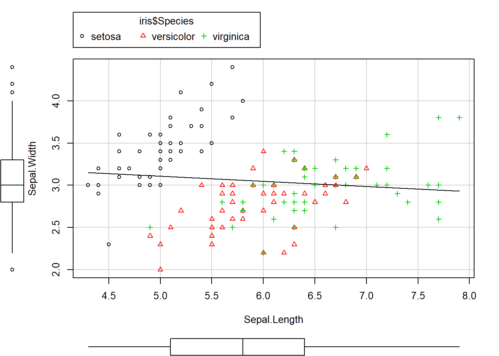
ggplot2パッケージで回帰線を描くためにはggplot2::geom_point関数に加えてggplot2::geom_smooth関数を用います。デフォルトでは回帰線の計算方法は自動選択になっていますので回帰直線を描きたい場合はにはmethodオプションに"lm"を指定してください。
iris %>%
ggplot2::ggplot(ggplot2::aes(x = Sepal.Length, y = Sepal.Width)) +
ggplot2::geom_point(ggplot2::aes(colour = Species, shape = Species)) +
ggplot2::geom_smooth(method = "lm", se = FALSE)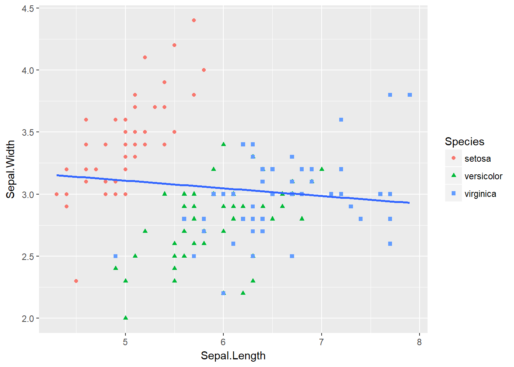
散布図と層別の回帰線
car::scatterplot関数は層別の回帰線も描けます。groupsオプションが指定されていると自動的に層別の回帰線を描きますが明示的に指定したい場合はby.groupsオプションをTRUEに指定してください。
car::scatterplot(Sepal.Width ~ Sepal.Length, data = iris, by.groups = TRUE,
groups = iris$Species, smooth = FALSE)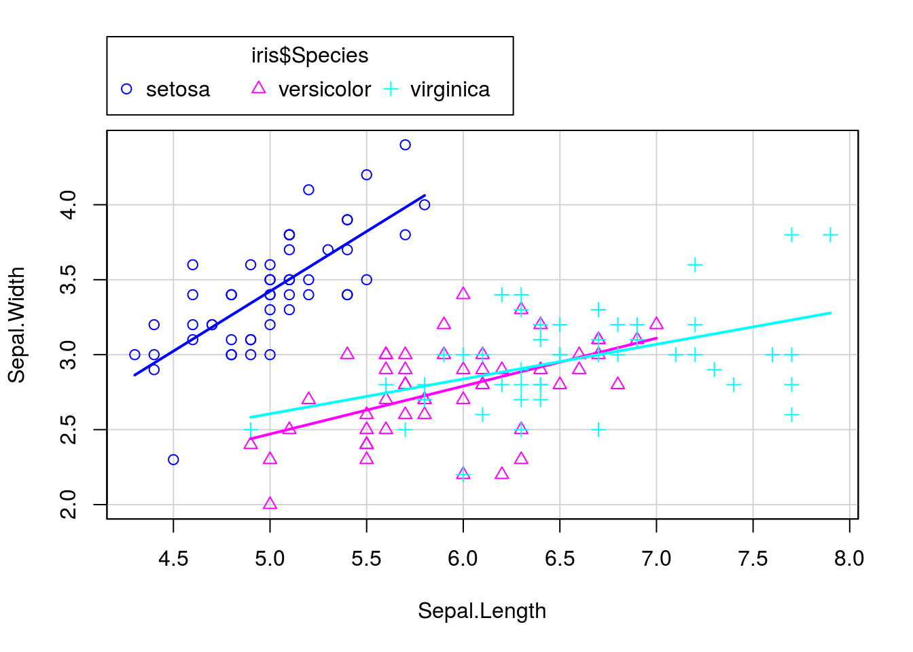
ggplot2パッケージで層別の回帰線を描にはggplot2::aes関数の指定位置を変更するのが簡単です。
iris %>%
ggplot2::ggplot(ggplot2::aes(x = Sepal.Length, y = Sepal.Width,
colour = Species, shape = Species)) +
ggplot2::geom_point() +
ggplot2::geom_smooth(method = "lm", se = FALSE)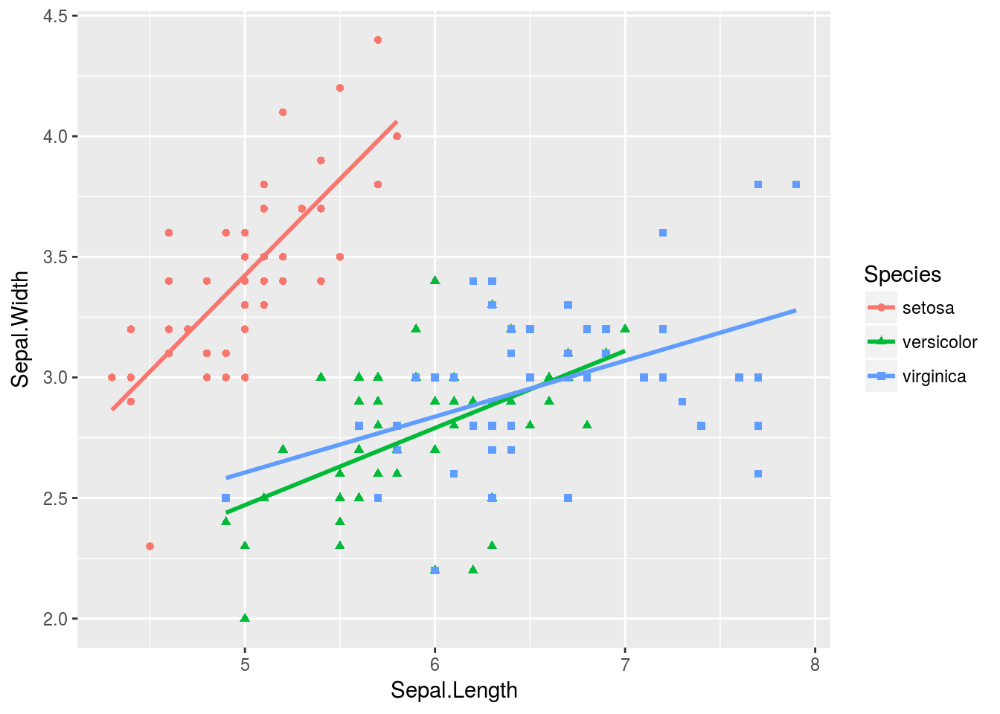
ラベルを表示する
散布図はデータの数が多いことが多くどのデータか識別するためにテキストラベル（以降、ラベルと表記）を表示したいことがあります。ラベル表示は追加パッケージを用いると比較的簡単にできます。
car::scatterplot(mpg ~ hp, data = mtcars, smooth = FALSE, boxplots = FALSE)
with(mtcars, maptools::pointLabel(x = hp, y = mpg,
labels = row.names.data.frame(mtcars),
col = "red", cex = 0.75))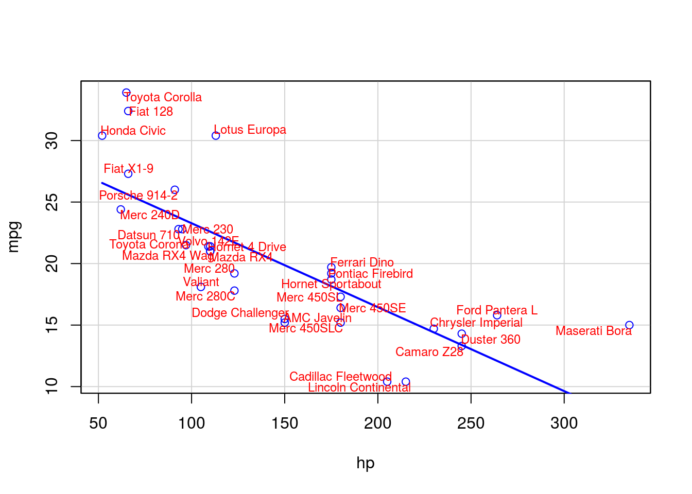
ggplot2パッケージではggplot2::geom_text関数またはggplot2::geom_label関数を用います。
mtcars %>%
ggplot2::ggplot(ggplot2::aes(x = wt, y = mpg, colour = as.factor(cyl))) +
ggplot2::geom_point(size = 3) +
ggplot2::geom_text(ggplot2::aes(label = rownames(.)))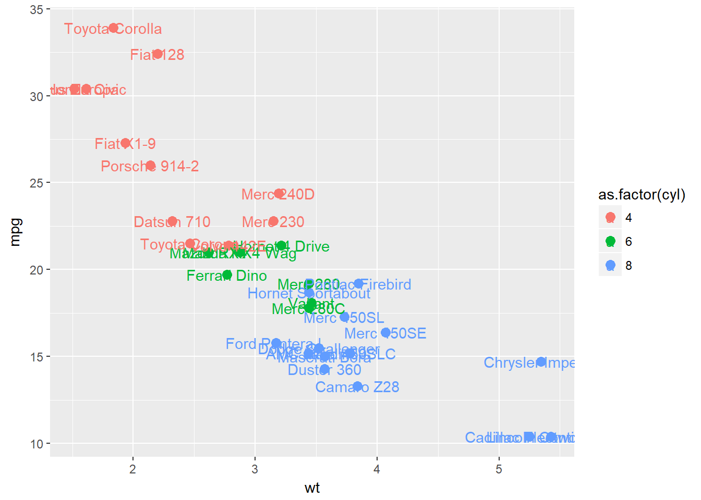
mtcars %>%
ggplot2::ggplot(ggplot2::aes(x = wt, y = mpg, colour = as.factor(cyl))) +
ggplot2::geom_point(size = 3) +
ggplot2::geom_label(ggplot2::aes(label = rownames(.)))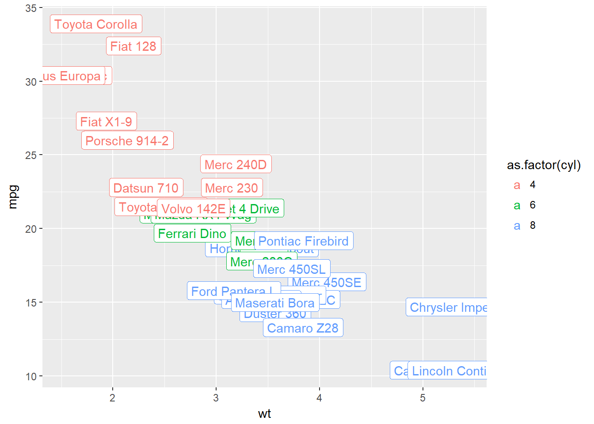
データ数が多いとどうしてもラベルが重なってしまいます。ラベルが重なってしまうのを避ける方法はラベルが重ならないように描画するを参照してください。
 CC BY-NC-SA 4.0 , Sampo Suzuki [2018-07-03 22:33(JST)]
CC BY-NC-SA 4.0 , Sampo Suzuki [2018-07-03 22:33(JST)]